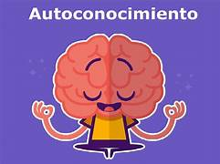

Diccionario Lectura Facilitada
Ámbito
Definición:
Grupo de ideas o preguntas sobre un tema.
Ejemplo:
En el ámbito de naturales los animales son muy importantes.
Autoconocimiento
 Definición:
El conjunto de cosas que sabemos acerca de quiénes somos, que nos forman como persona.: personalidad, autoimagen, autorrespeto, autoconcepto, autoaceptación y autoestima.
Ejemplo:
Mi personalidad es extrovertida: soy una persona muy habladora y me gusta tener buenos amigos y amigas .
Aventura

Definición:
Algo que vivimos especial, diferente e interesante, con un final desconocido.
Ejemplo:
Laura vivió una aventura cuando se perdió en la selva.
Biografía

Definición:
Historia sobre la vida de una persona.
Ejemplo:
Mi abuela ha escrito su biografía.
Candidato

Definición:
Persona que quiere conseguir un puesto de trabajo o un premio.
Ejemplo:
Pedro es el mejor candidato para ser el nuevo alcalde de la ciudad.
Creativo

Definición:
Que es original o diferente.
Ejemplo:
Mi hermano ha hecho unos dibujos muy creativos.
Cualidad

Definición:
Características de una persona o cosa. Las cualidades suelen ser características positivas.
Ejemplo:
La puntualidad es una cualidad importante.
Desafío
Definición:
Situación o problema difícil que una persona debe superar.
Ejemplo:
Retransmitir la noticia de un terremoto es un desafío.
Destreza

Definición:
Habilidad con la que una persona hace algo. Las destrezas suelen ser habilidades positivas.
Ejemplo:
Mi prima Ana tiene una gran destreza para el baloncesto.
Empleo

Definición:
Es el trabajo que realiza una persona por dinero.
Ejemplo:
Me han ofrecido empleo como taxista.
Empresa
Definición:
Organización dedicada a una actividad o trabajo para conseguir dinero.
Ejemplo:
En la empresa de mi madre hay muchos trabajadores.
Entrevista

Definición:
Una entrevista es un diálogo entre personas. Una entrevista es un diálogo mediante preguntas. Una entrevista es un diálogo para conseguir información.
Ejemplo:
Realizamos una entrevista a una persona experta para que nos ayudara con sus consejos.
Entrevistador

Definición:
Persona que realiza una entrevista.
Ejemplo:
La entrevistadora hizo muchas preguntas interesantes.
Evaluar
Definición:
Valorar el trabajo y los conocimientos de alguien.
Ejemplo:
El maestro evalúa el trabajo de los estudiantes.
Formación

Definición:
Son los estudios o aprendizajes que una persona tiene o hace.
Ejemplo:
Para ser policía debes tener una formación adecuada.
Formal

Definición:
Dicho de alguien o algo que es serio, sincero y lejano de lo gracioso.
Ejemplo:
Dar la mano es un saludo formal.
Habilidad
Definición:
Capacidad de una persona para hacer algo bien y con facilidad.
Ejemplo:
Mis habilidades son los deportes acuáticos e inventarme personajes fantásticos para cuentos.
Idóneo
Definición:
Que es adecuado o perfecto para otra cosa.
Ejemplo:
Esa pieza de puzzle es la idónea para este hueco.
Laboral
Definición:
Algo que está relacionado con un trabajo.
Ejemplo:
La orientadora laboral me ayudó a escoger un trabajo.
Párrafo
Definición:
Trozo de un escrito con unidad que queda diferenciado del resto de trozos del texto por un punto y aparte y también por llevar letra mayúscula inicial.
Ejemplo:
Mi carta es corta, tiene pocos párrafos.
Perfil
Definición:
Grupo de habilidades o características que un objeto o una persona deben tener para cumplir una función.
Ejemplo:
Mi hermana Andrea cumple el perfil para trabajar como bombera.
Periodista

Definición:
Persona que en su trabajo busca información y cuenta lo que sabe sobre diferentes temas.
Ejemplo:
La periodista contó por la televisión todo lo que había ocurrido en el incendio.
Personal

Definición:
Algo que es de una persona.
Ejemplo:
Julián ha traído un trozo de tarta en su recipiente personal.
Principios
Definición: Los principios son el conjunto de normas y reglas que deben cumplirse para que la vida en sociedad sea armoniosa, para que cualquier sistema funcione de manera adecuada.
Ejemplo:
María es fiel a sus principios, ella cree en la naturaleza y no tiro la basura al suelo como sus amigos/as.
Profesional

Definición:
Persona que realiza un trabajo con éxito. Es una persona con experiencia en ese trabajo.
Ejemplo:
Cuando llegué me atendió el profesional de fontanería y me explicó cuál era la avería.
Protagonista
Definición:
Persona que desempeña el papel principal en una obra, un hecho o un acontecimiento.
Ejemplo:
Me encanta el protagonista de esa serie.
Público
Definición:
Grupo de personas que ven un espectáculo, un concierto o un programa.
Ejemplo:
El público aplaudió cuando acabó la actuación.
Reto
Definición:
Situación difícil o peligrosa para una persona.
Ejemplo:
Andar con las manos para mí es un reto.
Simultáneo

Definición:
Dos o más cosas que ocurren a la vez.
Ejemplo:
Las dos manzanas cayeron del árbol de forma simultánea.
Suceso

Definición:
Hechos, eventos o acontecimientos que han ocurrido y que tienen importancia para alguien.
Ejemplo:
Ayer ocurrió un suceso increíble, un niño estaba paseando por el campo cuando se encontró un oso enorme.
Útil

Definición:
Algo que es interesante, bueno o valioso para conseguir un objetivo o resolver un problema.
Ejemplo:
A Juan le resultó útil aquel curso de tecnología.
Valorar
Definición:
Acción de reconocer o darse cuenta del trabajo o esfuerzo de una persona.
Ejemplo:
El maestro valora el esfuerzo del equipo.
Valores
 Definición:
Definición:
Guían las decisiones de una persona, un grupo o una sociedad. Representan conceptos abstractos, pero se manifiestan en cualidades y actitudes.
Ejemplo:
Los padres de Lucía le han enseñado unos valores muy importante con los mayores: respetarlos siempre.